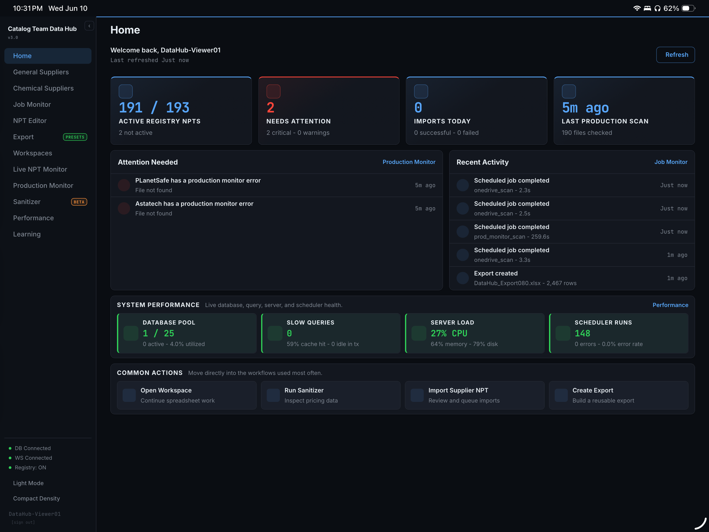
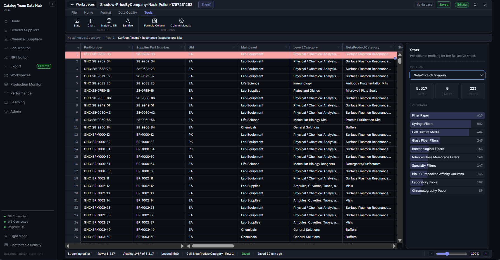
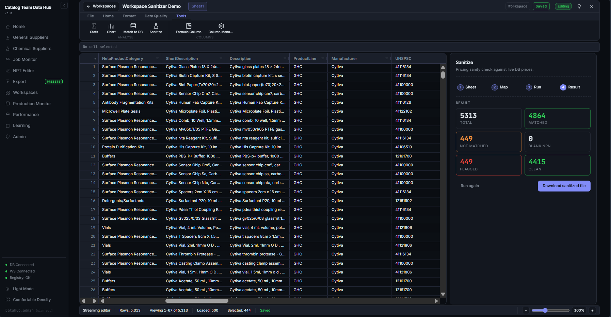
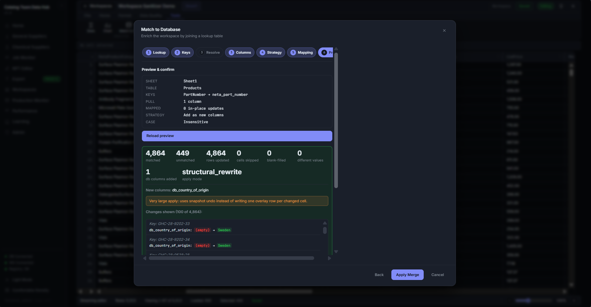
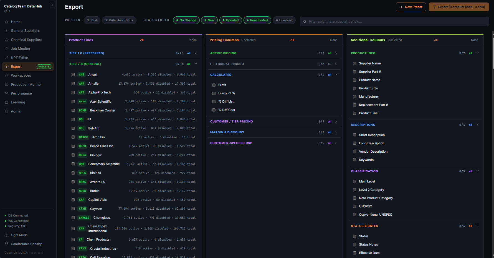
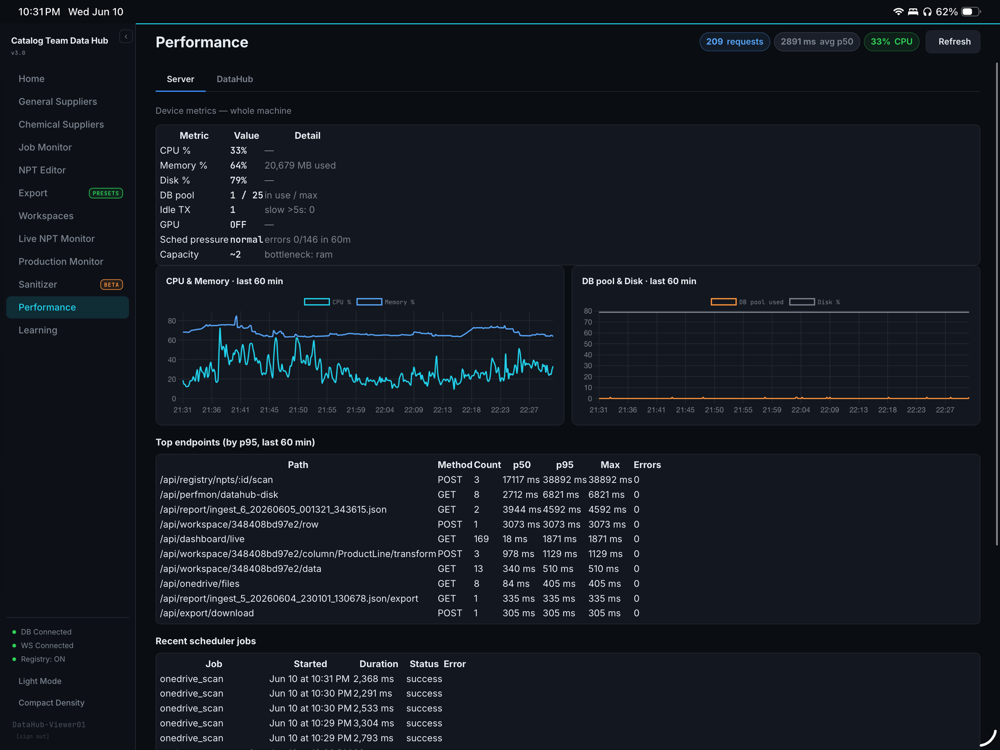
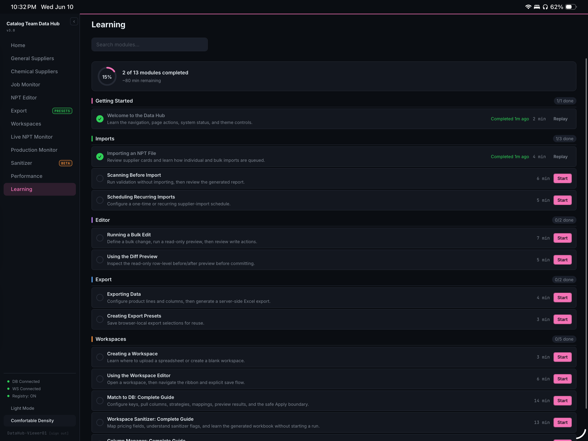
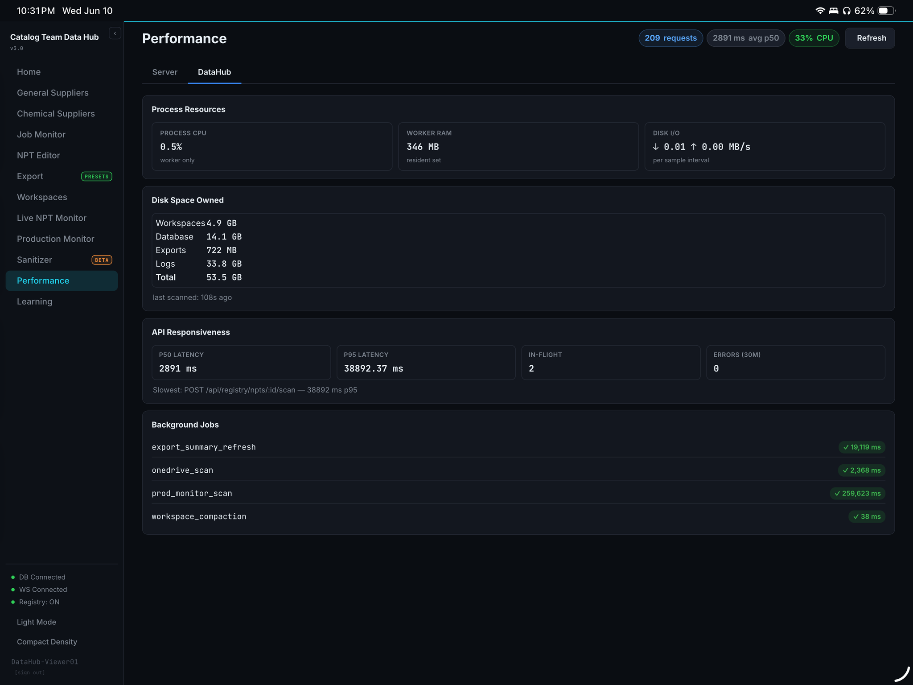

An internal platform that moved our catalog team off file-by-file Excel work and onto a centralized, validated, database-backed process.
The Catalog Team Data Hub is an internal data platform I designed and continue to build at Neta Scientific. Before it, most supplier catalog work happened in Excel with Ablebits: importing files one at a time, cleaning columns, running lookups, matching records, and passing updated spreadsheets between people. That process worked, but it was easy to lose context, repeat the same cleanup, or make a change without a clear record of what happened.
I built the Data Hub to bring those workflows into one place. PostgreSQL serves as the centralized catalog database, while staged supplier imports validate incoming files before anything is allowed into the main catalog. Each import keeps its history, separates invalid or questionable records for review, and gives the team a clearer path from the supplier’s original file to the data we eventually use.
The browser workspaces are the part that most directly replaces the old Excel workflow. They let the team open large supplier datasets, filter and review rows, make bulk edits, and run database matching without moving between separate files and tools. Matching can use configurable keys and mapped columns, and the preview step makes it possible to review the result before applying changes. Once the data is ready, export workflows turn the cleaned and matched records back into the formats needed for customer updates, pricing work, and catalog operations.
import supplier_file.xlsx✓ staged — original file and import history kept✓ validated — invalid or questionable rows set aside for reviewmatch --keys configurable --columns mapped✓ preview ready — changes reviewed before anything is appliedapply✓ merged into the catalog — change recorded in the audit logexport --for customer-update✓ cleaned, matched records exported in the required formatIllustrative walkthrough of the import flow described above, not captured output.
I also wanted the platform to explain what it was doing after an import finished. It tracks import activity, scheduled jobs, application health, API performance, and database activity, with audit logging for changes that need to be traced later. Background job scheduling handles recurring work, and the monitoring views make it easier to spot a failed job or slow endpoint without digging through multiple systems.
The application runs in Docker, which keeps development and deployment consistent as it moves toward secure multi-user hosting. I am actively working with IT on Microsoft Graph integration, Microsoft Entra SSO, and VPN-based private access. Those infrastructure pieces are still being implemented, along with the longer-term plan to move the platform into an Azure-hosted environment.
What makes this one of my favorite projects is that it sits between data engineering, platform development, and day-to-day catalog work. I can see the old spreadsheet process, understand where it breaks down, and then design the database, API, interface, and operational tooling needed to replace it with something the team can keep building on.






